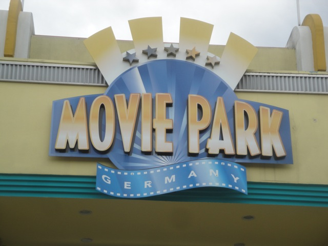
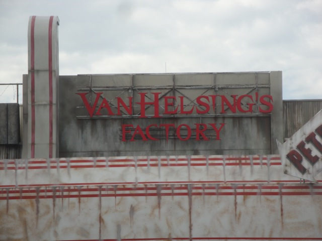
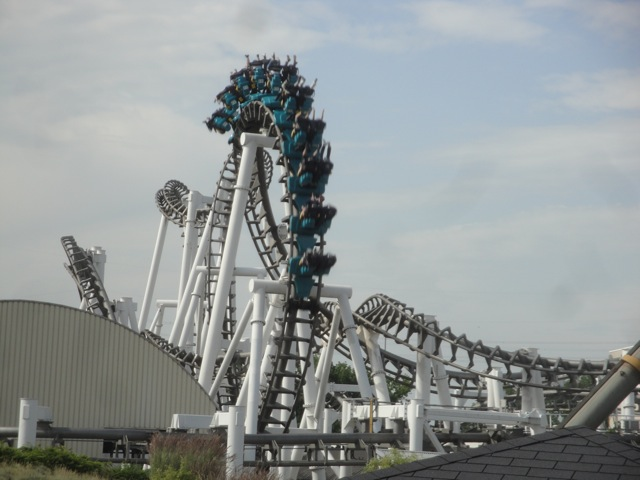
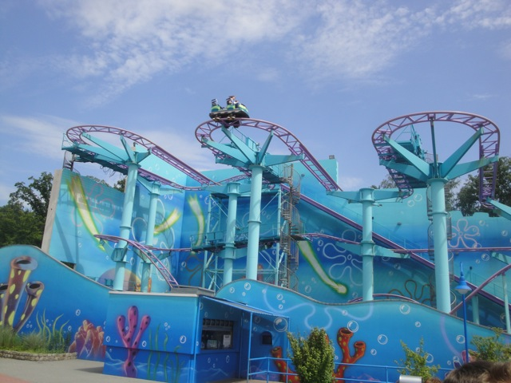
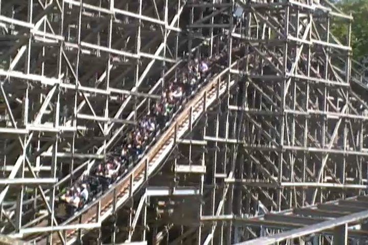
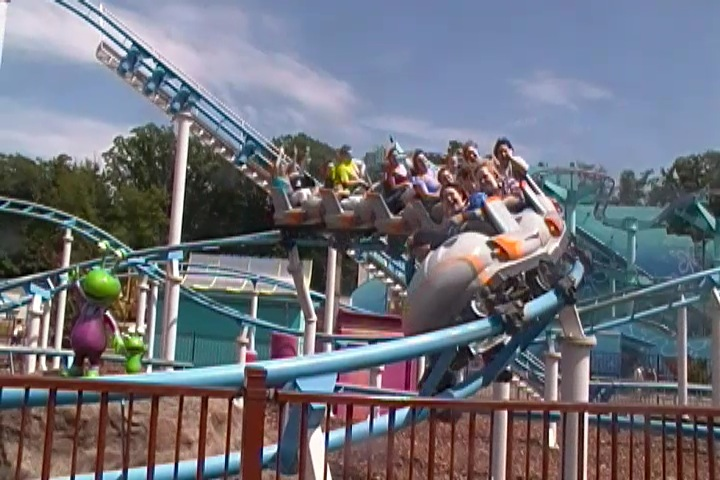
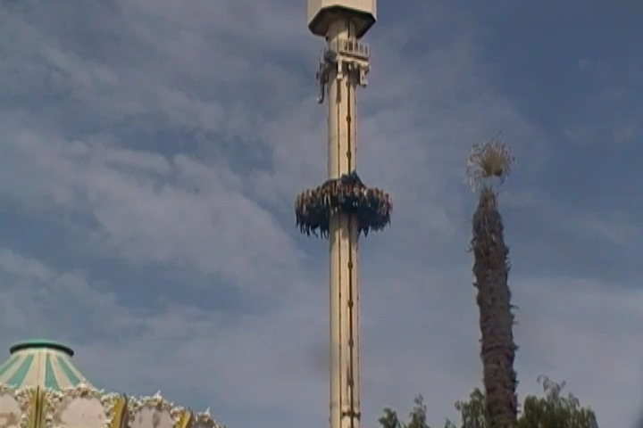
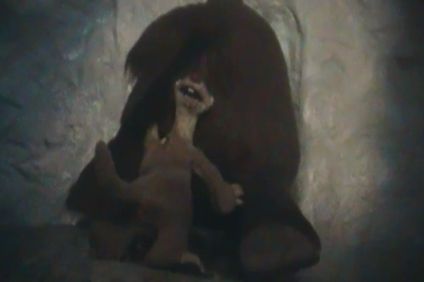
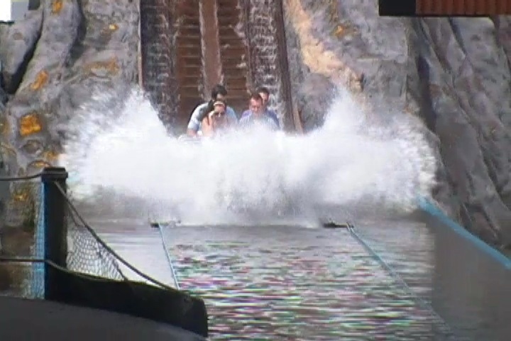
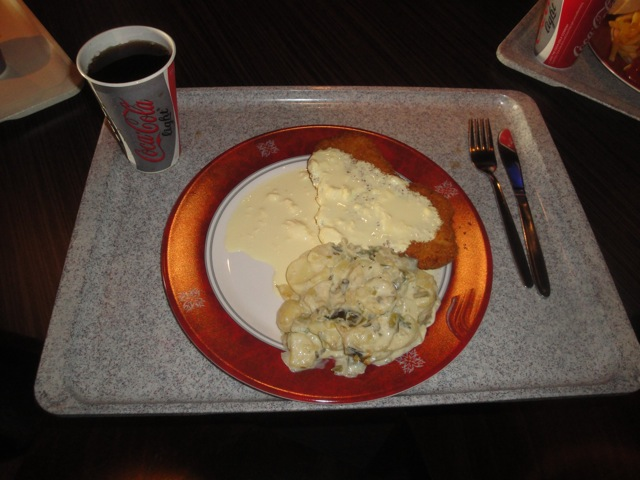

| |
Movie Park Germany Review

Movie Park Germany is a fun amusement park. It's a fun place and all, but I will admit that compared to all the other great theme parks in Germany, such as Heide Park, Holiday Park, Phantasialand, and my personal favorite park ever, Europa Park, Movie Park Germany is kind of on the bland side and a little dull. But I still really enjoyed my time while visiting the park. But I will admit that it feels a little more for locals than for seasoned travelers. The coaster selection in the park isn't exactly the best as they do have a lot of typical and standard rides, such as an SLC, lots of cookie cutter family coasters, and sorry to be mean, but the worst wooden coaster in the world. It's true, but I'll deal with just how horrible that ride is in the Bandit review down below. So yeah, from what you can hear, the coaster selection at this park is fairly mediocre, and yeah. So Movie Park Germany isn't exactly a place that screams out for coaster enthusiasts. And sadly, the rest of the rides don't exactly stand out either. Now don't get me wrong. They do have a good coaster as well as a couple of really fun and exciting rides, but for the most part, this is sort of more of a credit whoring park. There's nothing that stands out or will blow you away here. But with that said, there is some good news. They got a really fun looking Mack launched coaster since my last visit, and it's still a fun park that I enjoyed. So if you have time and want to boost your credit count, Movie Park Germany is a park that'll certainly get that job done. Just don't expect a Europa Park or a Heide Park.
Rollercoasters
There is a link to a review of all the Rollercoasters at Movie Park Germany.
(Please keep in mind that there is no review of Star Trek: Operation Enterprise since it didn't exist when I last visited.)
Top Coasters
Van Helsing's Factory Review

Meh Coasters
Iron Claw Review

Family Coasters
Ghost Chasers Review

Sh*tty Coasters
Bandit Review

Kiddy Coasters
Backyardigans: Mission to Mars Review

Jimmy Neutron's Atomic Flyer Review

Flat Rides
Here are the reviews of all the Flat Rides at Movie Park Germany. Let's start out with not only the star flat ride, but also just the star attraction of the park in general (at least it was back when I last visited). I'm talking of course, about High Fall. High Fall is one of those Gyro Drops, or as some people know them, as the Stand Up Floorless Tilting Drop Towers. You may be more familiar with it's more well known, American twin, Acrophobia @ Six Flags Over Georgia. It's a shame that these are the only two Gyro Drops in the world as they really are amazing rides. It may not look like an impressive drop tower due to it's incredibly small size, but never have looks been more deciving. This thing is brutal and agressive thanks to its seating and it's tilt. It's one of those rare rides that pushes the "OH SH*T!!!" button for me and is honestly, the only ride at Movie Park Germany that I'd consider great (at least until I ride Star Trek). There's a reason that I put High Fall so high up on my Top 10 Drop Towers List. Aside from that, the other flat rides aren't that special. They do have a Disk-O witha hump in the middle. But for some reason, it was just really rough. I know that sounds weird, but it just was. They also have one of those Water Whips, which are just really fun rides and I only wish that more parks had rides like that. Apparently, they also have a Top Spin and a Frisbee here as well. But I'm not sure if they existed when I visited and I just didn't know about them, or if these are new additions. Either way, I'm happy for more rides at this park. Especially fun ones (I really like frisbees).

It may be small, but this drop tower will freak you out.
Dark Rides
All right. Movie Park Germany isn't exactly well known for dark rides as it only has one dark ride. And some could classify it as a water ride, but I feel that a dark ride far more accurately describes it despite it's hidden drop at the end. Ice Age Adventure. It doesn't seem like an special dark ride based on a mediocre movie series (Sorry Ice Age fans). But mark my words, this ride has some of the best anamatronics on any dark ride. These things are so high quality that you'll wonder why the hell Disney hasn't come to Movie Park Germany to plagerize the technology. The anamatronics are that good (end sarcasm mode)!! =) But joking aside, it's a fun little ride and actually has a surprise drop at the very end that doesn't get you wet despite being in water. And when it's all over, the Ice Age is over and they're all in a tropical paradise.

You get to grope ass on this ride? I'm suddenly interested in this ride. =)
Water Rides
Movie Park Germany has some really intersting water rides that are definetly worth checking out. And of course, let's start out with their most popular water ride. Alien Encounter. It's actually a fairly well themed water ride inside a really cool looking volcano. You go around and see some cool robots and aliens before going down a couple drops. It's a lot of fun. The only problem with the ride is that the water on the ride is...disgusting. Now don't get me wrong. All water ride water is disgusting. But it's more disgusting than usual on Alien Encounter. And the fact that they recycle the water on the ride doesn't exactly help the ride. But whatever. I still really liked the ride. Then there's their rapids ride, Mystery River. This was a very interesting ride. The whole ride is themed to fairies, and while there are never any drops on the ride, the entire river is flowing at what feels like 20 mph. You're just flying over these rapids, nervous that at any second, it's going to completely drench you despite staying completely dry on the ride. It's perhaps one of the weirdest rapids rides ever, but I honestly really like it. I can't think of anything else that really flows like Mystery River. Oh, and they also have a Dora the Explorer themed log flume. But it doesn't look like anything special, especially after seeing that the park has two really fun and unique water rides that you should definetly check out.

Fun ride. Nice Theming. Disgusting Water.
Dining
The dining at Movie Park Germany is fairly good. It's nothing crazy or to scream over, but I really enjoyed it. Now I had the gluttony pass, so I was able to eat as much as I wanted during my visit to the park, and good god. I took advantage of that. No question about that. I had myself a hamburger and a milkshake, a pretzal, a doughnut, European Fanta, and this really good lunch. I think it was some sort of Schnitzel. All I know is that I loved it and I really love German food. So yeah. Even though Movie Park Germany primarily has just typical amusement park crap, they do have German amusement park crap, which you don't really get at American parks. Which is a shame. We need more Schnitzel. That sh*t is awesome!! =) And yeah. I definetly recommend the gluttony pass, well at least if you love food and have a big appetite. I'm certainly glad that I had it.

More Schnitzel please. =)
Theming and Other Attractions
Here are the reviews of all the other stuff at Movie Park Germany. The theming at the park is actually fairly good. Again, it's nothing crazy or too impressive compared to it's neighbor parks, Heide Park, Phantasialand, and Europa Park, but honestly, compared to all the theme parks I've visited in the world, Movie Park Germany is actually one of the better parks theming wise belive it or not. If you've been paying attention to the name of this park, you'll notice that it's called Movie Park Germany. So yeah, they're trying to go the Universal Studios Hollywood route. And they actually don't do that bad a job at it. Granted, there's no tram ride and it doesn't feel like a movie set at all, but it actually does have some really nice theming. I like the area themed to the Santa Monica Pier, and as someone who's familiar with the place, they actually did a really nice job. And of course, their Nickelodeon area is really well themed. They definetly did a good job on that. Now, as for as other stuff goes, there's really not much. There's a couple of museums, a parade, and other fun stuff. But it's pretty lacking when it comes to stuff outside the rides. But hey, Movie Park Germany is mostly about rides and credit whoring.
In Conclusion
Movie Park Germany is a fun theme park that while it's not crazy or anything, I still had fun over here. While the coasters for the most part are fairly mediocre, it still does have a good one, it looks like they since got a really good one, as well as some fun flat rides, some really good water rides, and one of the craziest drop towers on the planet. And on top of all that, it's all So yeah, there's still a lot of really fun attractions, even if they aren't the roller coasters of the park. I know that Movie Park Germany isn't exactly the most popular park in Germany as like I've mentioned before, there's a lot of competition from other world class parks, and Movie Park Germany is nothing to scream over. Nothing to really flock to from far away. But it is still a nice park and I do think that this park can improve and perhaps with some world class coasters and a little bit of cleaning up and adjusting some of their flaws, it could definetly compete with the great parks in Germany. But, as of today, it's nothing to really scream over. Stop by if you want to have a fun afternoon, get some credits, or ride an amazing drop tower or some cool water rides. However, if you only have limited time, then stick to the world class parks.
Enthusiast FAQs.
*Are there kiddy coaster restrictions? - Nope. You can ride the kiddy coasters here.

Tips
*Make sure you ride High Fall and the cool water rides.
*Avoid Bandit at all costs.
*I'm completely blind on their POV policy. So proceed with caution.
*Movie Park Germany has the stupid La Ronde rule of closing everything early. So be warned and make sure you ride things early.
*Have Fun!!!!
Theme Park Category:
Amusement Park
Location
Bottrop, North Rhine-Westphalia, Germany
Last Day Visited
June 28, 2012
Video
I don't have enough footage for a Movie Park Germany video. I'll have to go back and shoot more video.
Complete Update List
2012
TPR's Mega Europe Trip
Here's a link to the parks website.
Home
|